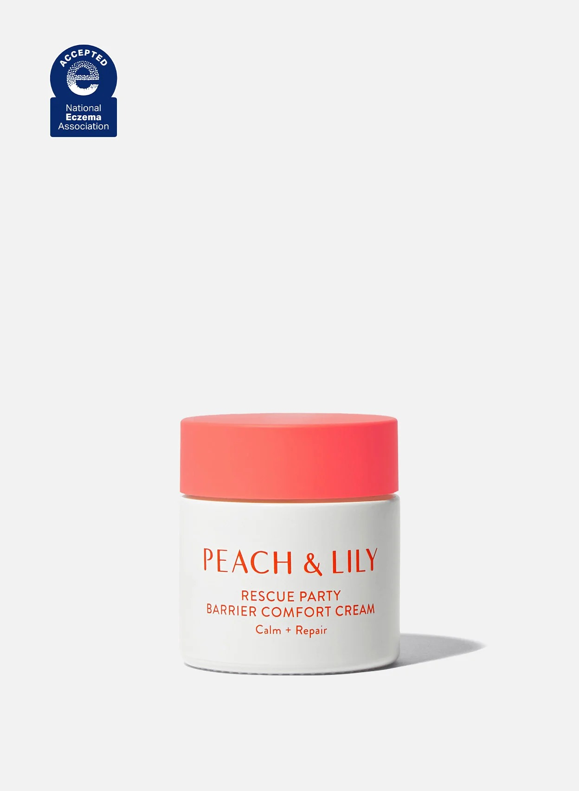
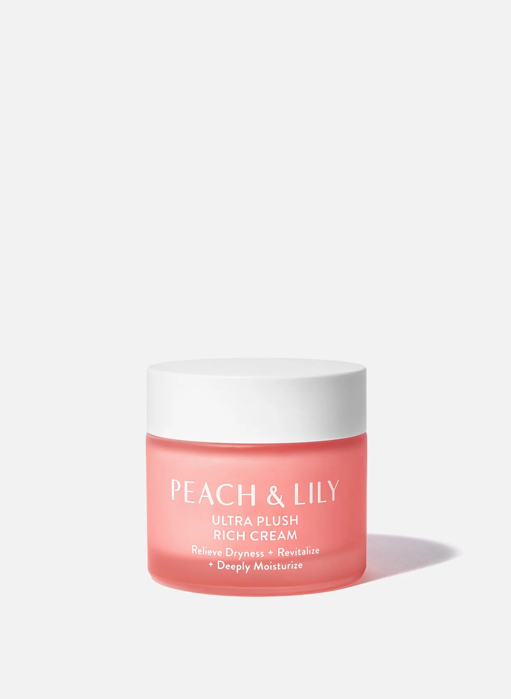
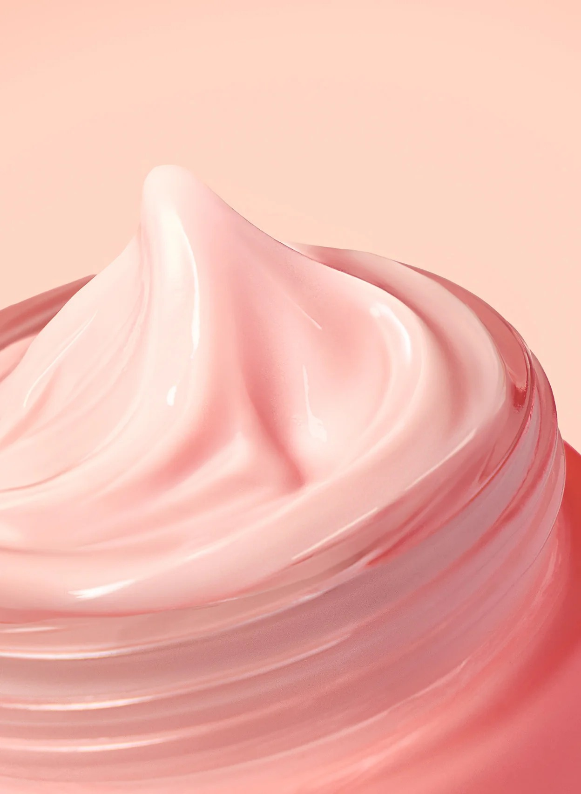
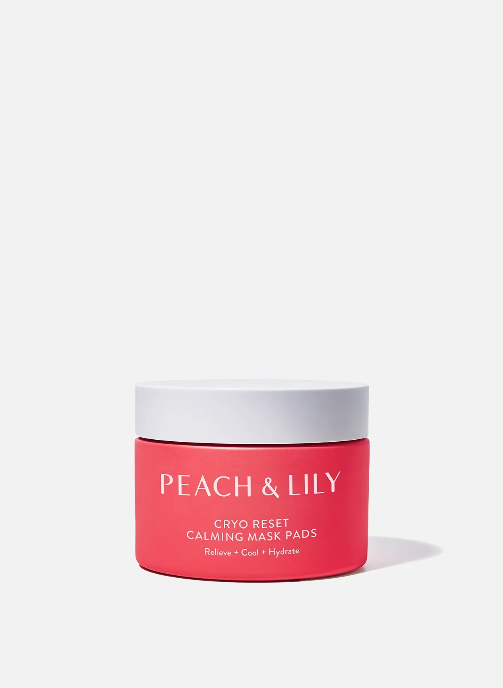

Glass Skin Refining Serum
Our iconic, best-selling serum that started the Glass Skin movement. A powerful yet gentle blend of peach extract, niacinamide, East Asian mountain yam, and peptides visibly calms, brightens, plumps, and protects skin. Your complexion will look and feel hydrated, healthy, and glow like glass. Support clear, luminous skin with Glass Skin Refining Serum from Peach & Lily.
￦67,000

MiniProtein Exosome Bioactive
Saturate skin in our breakthrough formula, expertly-designed to reveal next-gen biorich bounce and glow. A proprietary MicroMimic Tri-Signal Complex™ with biomimetic miniproteins, exosomes (read a deep dive here), and phyto growth factors visibly improves the look of collagen loss, which can start as early as your 20s. Your skin’s power move.
₩91,000

Glass Skin Ginseng Collagen Mask
A luxurious Glass Skin upgrade to the viral collagen mask. Each Korean glass skin collagen mask is super-concentrated with a full-size 40g serum bottle and 25 potent, premium ingredients including 2% ginseng extract, 9 peptides, and 55k ppm vegan collagen complex to visibly plump, hydrate, and smooth in one use. An advanced delivery system melts into skin for real, lasting Glass Skin results.
₩14,000

Glass Skin Discovery Kit
We introduced Glass Skin to the world, and this 4-step routine is the perfect way to achieve that iconic clear, smooth, luminous look. These travel-size skincare essentials gently cleanse, boost hydration, calm, smooth, and deeply nourish in one easy-to-use kit. Start here for your healthiest-looking skin that glows like glass.
₩67,000